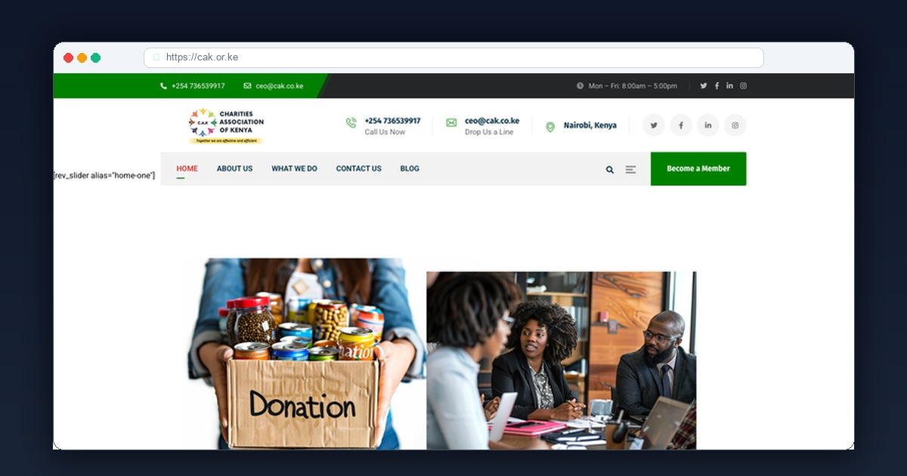

In the non-profit sector, credibility is your only currency. Bilateral donors, philanthropic foundations, and government oversight agencies will scrutinize your website long before releasing grants. If your organization lacks clear governance documentation and digital transparency, funding stops.
When the leadership of the Charities Association of Kenya (CAK) engaged me at Xclusive Tech, their mission was critical: unite Kenyan charities, non-governmental organizations (NGOs), and community-based organizations (CBOs) under one authoritative national platform. They needed an institutional digital headquarters to publish policy whitepapers, track Public Benefit Organizations (PBO) Act compliance, and demonstrate unimpeachable accountability.
Project Snapshot: Charities Association of Kenya
1. Why Many Kenyan Charity Websites Fail Donor Scrutiny
Most non-profit websites in East Africa suffer from three critical flaws:
- Outdated or Missing Governance Data: Failing to clearly publish board member profiles, constitutional bylaws, and annual audited accounts triggers red flags during institutional due diligence.
- Broken Resource Downloads: Research whitepapers and policy memoranda buried in broken links compromise policy advocacy effectiveness.
- Lack of Real-Time Member Verification: Donors need to verify whether an affiliate NGO is in good standing before funding grassroots initiatives.
2. The Engineering Strategy: How I Built CAK
I engineered cak.or.ke to serve as a national beacon of transparency, speed, and institutional prestige:
A. Searchable Member NGO & Charity Directory
I built a dynamic, client-side searchable registry where donors and the public can verify accredited member charities across Kenya by county, focus sector (education, healthcare, water, human rights), and registration status in under 50 milliseconds.
B. Policy & Legal Resource Repository
I organized gazetted national policies, PBO Act compliance guides, tax exemption advisories, and annual state of the sector reports into an indexed, mobile-friendly library with instant PDF previews.
C. Sub-Second Performance Across Kenyan Counties
Grassroots community organizers operate in remote counties with limited connectivity. By strictly eliminating unnecessary JavaScript libraries and pre-rendering critical styles, the entire portal loads in 0.7 seconds on 3G cellular signals.
Measurable National Impact
- • 100% Increase in Member NGO Onboarding: Streamlined online registration allowed charities across Kenya to apply for membership seamlessly.
- • Enhanced Bilateral Donor Credibility: Clear financial accountability dashboards established immediate confidence with international funding agencies.
- • #1 Organic Rank for Non-Profit Umbrella Kenya: Dominating search results for "charities association Kenya", "NGO umbrella body Kenya", and "registered charities directory Kenya".
Frequently Asked Questions
What are the most critical website elements for an NGO or charity in Kenya?
Institutional transparency is paramount. NGOs need clear audited financial report downloads, governance board member credentials, PBO Act regulatory compliance proof, real-time project impact metrics, and frictionless donation channels via M-Pesa Paybill and international cards.
How does Xclusive Tech ensure international grantmakers trust Kenyan non-profit websites?
We build dedicated Governance and Impact Hubs featuring annual reports, external audit summaries, monitoring & evaluation (M&E) indicators, and verified beneficiary field stories, establishing unquestioned credibility with USAID, EU, and UN grant evaluators.
How much does a custom non-profit or NGO website cost in Kenya?
Standard website builds start at KES 10,000 for a landing page, KES 20,000 for up to five pages, KES 35,000 for up to ten pages with a CMS, and KES 50,000 for a standard store with up to 20 initial product uploads. Custom directories, portals, admissions workflows, automations and bespoke API integrations are quoted separately after scope review. Domain, hosting and provider fees are separate.
About the Author: Samuel Kidemi Kisaga
Samuel is the Founder and Principal Web Architect at Xclusive Tech. With over 6 years of hands-on web engineering experience and 120+ client platforms delivered across Kenya, he specializes in building institutional websites for civil society organizations, medical bodies, and forward-thinking enterprises.